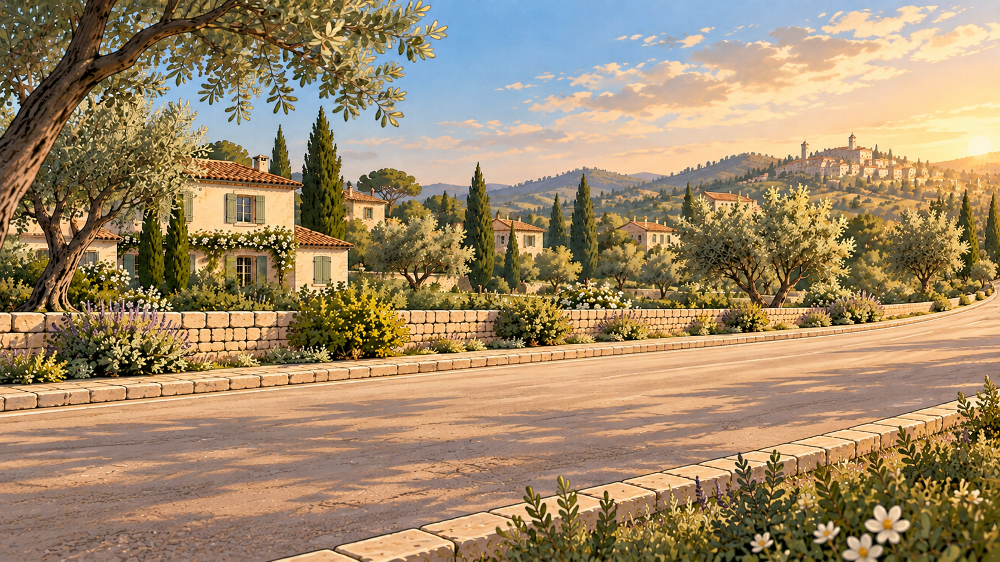
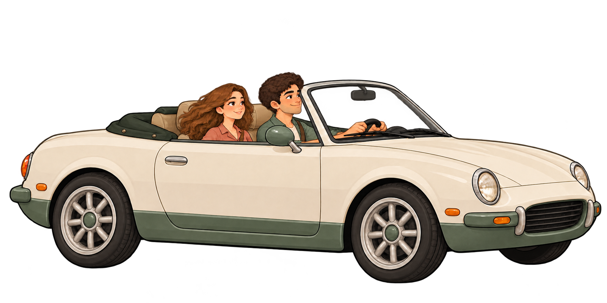

Una giornata smart · Clip 04
La casa vi aspetta al fresco.
Quando la coppia si avvicina a casa, la geolocalizzazione attiva il climatizzatore e porta la temperatura impostata da 26 a 23 °C.


La casa riconosce che state rientrando.
Preparo il rientro26°CClima attivato · Siete ancora in viaggio

Temperatura impostata26°CIn attesa del rientro
Una giornata smart19:35La casa segue il vostro ritmo.
LEILei
Una giornata smartAl rientro, la temperatura giusta.
00:0000:15
04 / 08 · La casa vi aspetta